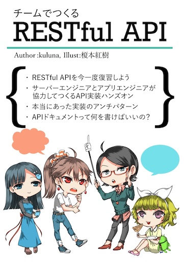

技術書典6 振り返り
2019-05-06 18:10:55 +0900 JST
Categories: REST API
チームでつくるRESTful API - BOOTH
https://booth.pm/ja/items/1314909

テーマ
今回はRESTful APIを題材としました。
きっかけは今働いている会社でRESTful APIを今まで書いたことのない人と一緒に仕事をすることになったことです。自分は独学で知っていたのですが、その人は全然わからないので自分と違ったAPIが出来上がってきました。
その人自体もある程度ググって調べていたらしいですが、なんとなく作っているとう風な感じでした。
しかしふと思い返すと、RESTful APIってこういうものだよって一体どこに書いていて、自分はどのようにして学んできたのかなと思うようになりました。振り返ってみても教科書ばかりで実際みんなどうやってるのといういことがあまり情報共有されていないのではと考えるようになりました。
そこで今回はRESTful APIの本をまとめてみようということになりました。
執筆
前回に引き続きVisual Studio Code + TextLintの組み合わせで執筆し、最後にWordで仕上げました。この辺りは過去にブログで紹介していますのでよければ見てみてください。
前回はソースコードを中心に誤った情報が発信されていないかを注意していましたが、今回は文章よりの構成となったため、間違いがないよう何度も国会図書館に通い文献調査を行いました。
ソースに謝りがないことはもちろんですが、自分もどこから学んだ知識かわからない以上、きちんと文献に基づいて書くことを意識しました。
書籍版
今回も前回に引き続き「ねこのしっぽ」さんに印刷をお願いしました。
(今見たら令和仕様になっててかわヨ)
入稿の仕方がわかっていたので今回も特にトラブルなく入稿できました。
ねこのしっぽさんは特定のイベントに対して、締め切りの少し前までに入稿すると割引してくれるサービスがあるので、割引を目標に原稿を書くやる気になります。
スクリーンショットの文字が読み取りづらいかもしれませんといった細かな点まで見てくださっていて非常に良いです。
電子版
今回はPDF、EPUB版を用意しました。
EPUBはPDFと比べてデバイスに合わせた表示が可能です。今回の本はソースコードやイラストより文章がメインでしたのでEPUB版は非常に読みやすい仕上がりになったと思います。
EPUBの作り方ですが、今回はMacのPagesを使いました。PagesはEPUBで出力できる機能があります。
Wordで作成したdocxをそのままPagesに読み込みます。WordとPagesは完全な互換性を持っているわけではないので若干の表示崩れが発生します。(特に図形周り)
それらを違和感ないように調整したら「ファイル->書き出す->EPUB」で出力します。
結果
- 書籍版 40部
- 電子版 62部
- 既刊 13部
40部はあっという間に売り切れてしまいました。
そして今日までに売れた総部数は、
約230部
です！
前回が総数90部ほどなのでものすごい数が売れたことになります。
本当にみなさまありがとうございました。
振り返り
まずは前回の技術書典5で参加した時の「次にやりたいこと」が6でどれだけできたか振り返ってみます。
- 次の表紙はイラストレーターさんにキラッキラな表紙を描いてもらう
- DL版カードを作る
- 本の特設ページを作る
- もう少し隣のサークルとコミュニケーションをとる
この中でできたのは
- 次の表紙はイラストレーターさんにキラッキラな表紙を描いてもらう
- もう少し隣のサークルとコミュニケーションをとる
の2つですね。表紙はずっとやってみたかったので今回できたのは非常によかったです。
隣のサークルとのコミュニケーションですが、個人的にはがんばったつもりなのですが・・・
自分が40部をさっさと売り終わってしまい隣のサークルが一生懸命頒布しているような図だったのでもしかしたら変なやつに思われたかもしれません。
KEEP
- 参加者に興味を持ってもらえる本が書けた
- 書籍版を買った人に電子本も配布したのは非常によかった
- EPUB版は思ったより簡単に作れたので今後もやっていきたい
PROBREM
- 完全に需要予測を間違えた
- 結構な誤字脱字があった
- 書籍版を買ってくれた人につけたQRコードの一部が欠けていて読み取れない人がいた
- DL版をGoogle Driveで共有する方法は、そのリンクを忘れた人は二度とDLできなくなってしまう(2人アクセスできなくなったという連絡があった)
- 文章が多めになってしまった
TRY
- 自信を持ってたくさん刷る(在庫はBOOTHが引き取ってくれる)
- きちんと文章校正できるだけの時間を作る(余裕を持って書く)
- 図解も増やすと読みやすくなりそう
さいごに宣伝
7月27日(土)に大田区産業プラザPiOで開かれる技術書同人誌博覧会にサークルとして参加することとなりました！
チームでつくるRESTful APIを増刷して頒布します！
詳細はこんなブログなんかよりTwitterをフォローすると最新情報をキャッチできます。